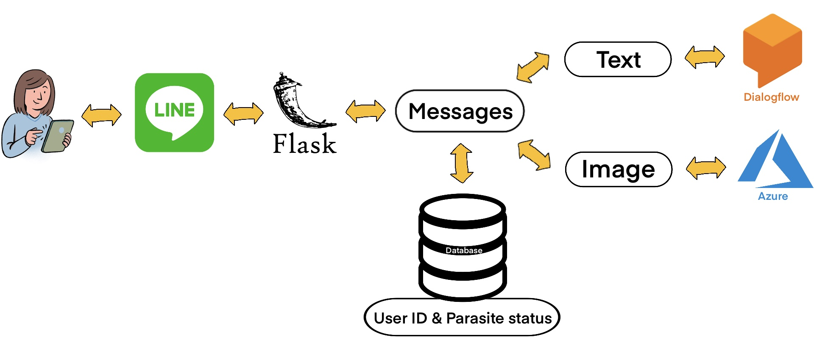

Design and Development of an Educational Chatbot by Focusing
on a Target Group Who are Students in Clinical Parasitology Class

Example Results: Chatbot(Prototype)
Abstract

Diseases caused by parasites are common health problems in Thailand. Especially in the Northeastern region, Opisthorchis viverrini is the most commonly found in people because people in Northeastern region often eat uncooked food such as koi (ก้อย) and picked fish (ปลาร้า) etc. Opisthorchis viverrini is the main risk of Cholangiocarcinoma.
To diagnose people whether they infected with parasite, experienced technicians need to look through microscopes at stool samples to detect parasite eggs. These special skills require knowledge and experience. In clinical parasitology class at faculty of associated medical science, Khon Kaen University, students often have questions but most of the times do not have opportunities to ask. Having a modern tool such as conversational robot which can answer question 7/24 can increasing the educational efficiency of students. Therefore, this project goal is to design and develop a chatbot for educational purpose that can classify parasite egg images and answer related questions. Although we aim students in clinical parasitology class as our main user group but our chatbot can benefit a much wider user groups who interested in healthcare and parasites.
user.
Presentation Video for NSC 2021
Presentation Poster for NSC 2021

The website template was borrowed from Michaël Gharbi.